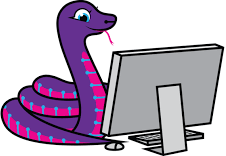

Learn the basics of computer programming using the Python language.
Familiarity with computers, Mac or PC (navigating folders; opening, editing files, etc.) Bring your own laptop.
This presentation can be found at "https://resq-it.com/Python". Please note this address so you can refer to the material later on.
Yours truly, Kal Maiwand, can be reached at kal@highcoTech.com. I have been using Python for about 10 years, and am still discovering new features and tricks :)